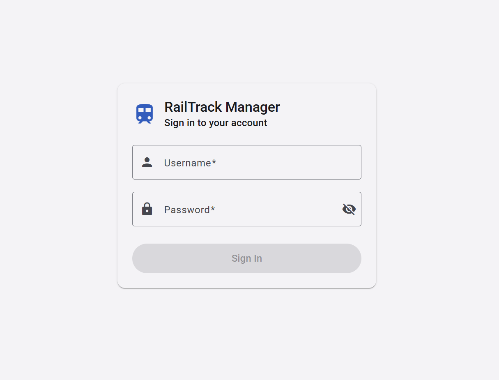
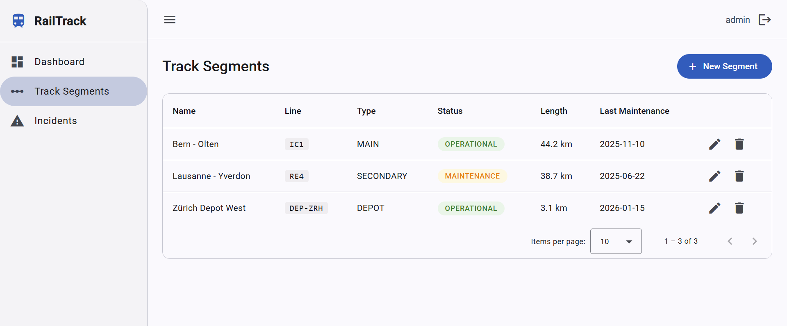
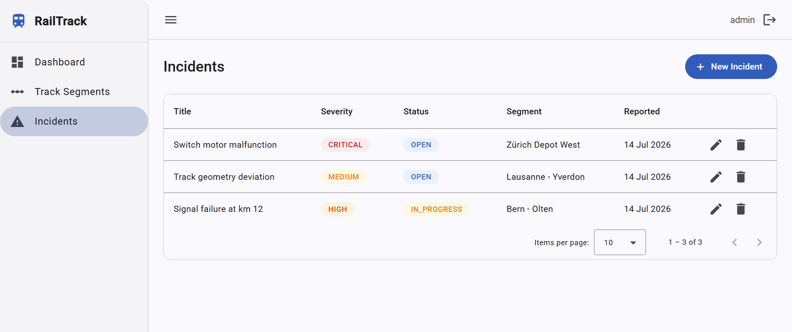
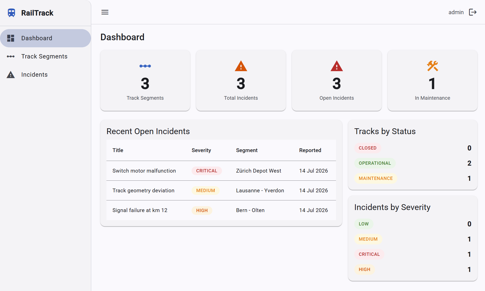
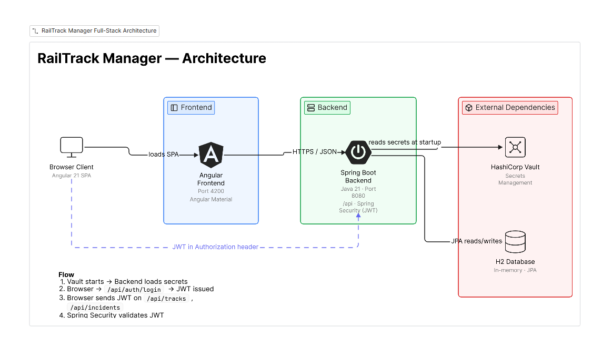

RailTrack Manager
Verwaltung von Gleisabschnitten und Störungen
Kontext
Als Liebhaber von Zügen und Schweizer Pünktlichkeit wollte ich etwas bauen, das beidem gerecht wird. So entstand RailTrack Manager: ein Full-Stack-Projekt, um Angular sauber mit Spring Boot zu verbinden und die Grundlagen von Angular Material wirklich zu beherrschen, anhand einer Domäne mit echter Komplexität: der Verwaltung von Bahninfrastruktur, statt eines weiteren CRUD-Beispiels ohne nennenswerten Geschäftssinn dahinter. Befüllt ist die App mit realistischen Daten aus dem Schweizer Bahnnetz (Bern–Olten, Lausanne–Yverdon, Zürich Depot).
Rundgang durch die Anwendung
Vault & Login
Die Anwendung nutzt HashiCorp Vault für die Verwaltung von Secrets. Bevor das Backend gestartet wird, muss deshalb ein Vault-Server laufen. Ist Vault bereit, startet zuerst das Backend und danach das Frontend. Es gibt keine vorangelegten Benutzer: Zuerst muss über die API ein Benutzer angelegt werden, mit dessen Zugangsdaten man sich anschließend im Login-Bildschirm anmeldet.

Track Segments
Das Track-Segments-Panel ist das Herzstück der Anwendung: Hier werden die Gleisabschnitte des Netzes verwaltet, mit Linie, Typ, Betriebsstatus und letztem Wartungsdatum. Die Daten sind mit realen Abschnitten des Schweizer Bahnnetzes befüllt: Bern–Olten, Lausanne–Yverdon und dem Depot Zürich.

Incidents
Der Bereich Incidents erfasst die gemeldeten Störungen zu jedem Gleisabschnitt, von Signalstörungen bis zu Abweichungen in der Gleisgeometrie, jeweils mit Schweregrad und Bearbeitungsstatus.

Dashboard
Das Dashboard bietet einen Gesamtüberblick über den Zustand des Netzes: Anzahl der Gleisabschnitte, Gesamt- und offene Störungen, Abschnitte in Wartung sowie eine Aufschlüsselung nach Schweregrad und Status. Diese Ansicht ist für einen schnellen Überblick über die Systemgesundheit gedacht.

Architektur

Diagramm erstellt mit Eraser: Browser → Frontend (Angular, Port 4200) → Backend (Spring Boot, Port 8080, JWT) → Vault (Secrets, beim Start gelesen) und H2 (JPA). Ablauf: Vault startet vor dem Backend → Login stellt ein JWT aus → das JWT wird bei den folgenden Requests im Authorization-Header mitgeschickt → Spring Security validiert es, bevor CRUD-Operationen auf Tracks/Incidents verarbeitet werden.
Stack
| Ebene | Technologie |
|---|---|
| Frontend | Angular 21 + Angular Material (standalone components) |
| Backend | Spring Boot 3.5, Java 21 |
| Sicherheit | Spring Security + JWT |
| Secrets | HashiCorp Vault |
| Persistenz | H2 |
Was ich gemacht habe
- Die komplette REST-API (CRUD für Gleisabschnitte und Störungen) mit Spring Boot und Spring Data JPA entworfen und implementiert.
- JWT-Authentifizierung mit rollenbasiertem Zugriff von Grund auf implementiert.
- Das Frontend in Angular 21 mit Standalone Components und Angular Material gebaut, mein erstes ernsthaftes Frontend-Projekt, kommend aus einem reinen Backend-Profil.
- Das Datenmodell entworfen und mit realistischen Daten aus dem Schweizer Bahnnetz befüllt, damit die Demo einen echten Anwendungsfall abbildet.
Technische Herausforderung
Ich kam aus einem reinen Backend-Profil. Die Herausforderung war nicht die API (vertrautes Terrain), sondern die Angular- und Angular-Material-Lernkurve so weit zu erklimmen, dass ein kohärentes Frontend entsteht: Standalone Components, reaktive HTTP-Services, Auth-Guards und Material-Komponenten, die sauber in den App-Flow integriert sind.
Ergebnis & Learnings
Eine end-to-end funktionsfähige Full-Stack-Anwendung (JWT-Auth, CRUD, Rollen), die echte Frontend-Kompetenz über das Backend hinaus zeigt und als wiederverwendbare Vorlage für künftige Angular + Spring Boot Projekte dient.